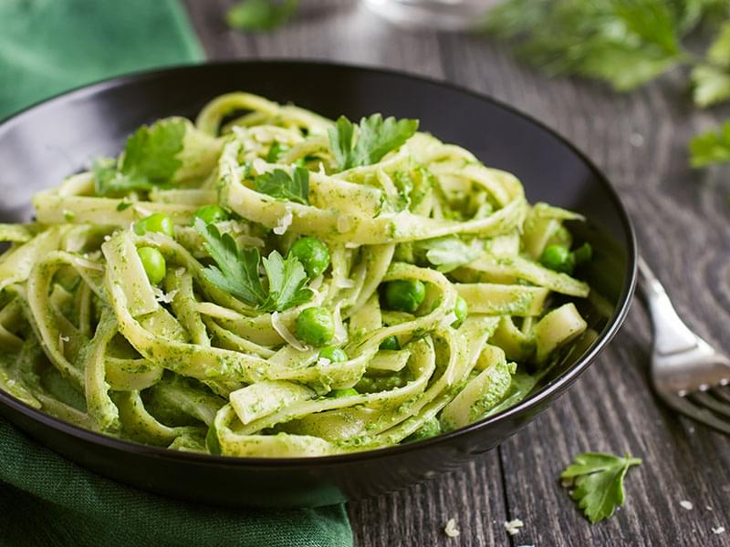

Pâtes au Pesto

Description
Cette recette vous transportera au bord de la méditerranée, dans une vraie « trattoria » de la ville de Gênes, patrie du « Pesto alla Genovese ».
Ingrédients
- 160g de linguine
- 1/3 tasse de sauce Pesto
- 3 c.à soupe d'huile d'olive
- 1 pincée de sel
Étapes
Préchauffer les assiettes de service au four à la température minimum pour qu'elles soient chaudes au moment de servir.
Placer une passoire dans l'évier de cuisine pour recevoir les pâtes après la cuisson.
- Faire cuire les pâtes.
- Pendant ce temps, mettre la sauce pesto dans un petit bol, y ajouter le sel (selon la quantité spécifiée dans la recette de sauce pesto. Ajouter la quantité spécifiée d'eau de cuisson des pâtes pour diluer quelque peu la sauce et la réchauffer en même temps.
- Remettre les linguine égouttés dans la marmite de cuisson des pâtes, ajouter la sauce et l'huile extra vierge, bien mélanger. Servir dans les assiettes chaudes.
Home